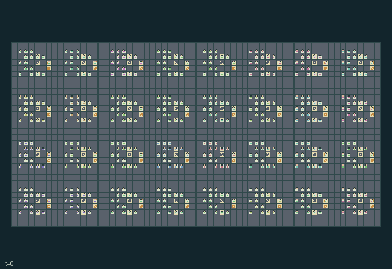

GI248 · 玄武潮汐打捞

在锈蚀前找回六十四箱实物，建造庇护、稳定支撑并救援改善共路；货权按最后收集的队伍计算。
身份与原始接口
共有 512 个独立可操作角色；每人 16 个离散动作；每人的原生观察宽度 272；原始时限 1024 步。声明的单步奖励范围为 -16 至 16。观察制度标识：partially_observable。
源码校验值： a3f68f170bfd0a38bc5eff6e983461f9699121fa8b529c19b65d2ad9eb008e1b
目标、奖励、人口、地图和时限均保留原值。动图不表示已完成任务。
目标与玩法
在锈蚀前找回六十四箱实物，建造庇护、稳定支撑并救援改善共路；货权按最后收集的队伍计算。
围绕上述目标安排每位角色的合法动作，以实际资源、位置、工序和信息为约束。提交的是同一步的联合行动，不是把角色按界面顺序逐个推进。动作编号与按钮名保持游戏中的英文，见下方逐项操作表。
自然完成、失败和截断由原始内核决定；最长运行 1024 步，不能把到达时限当作成功。先看结束标记，再检查目标、损失和实际回报。空间游戏保留原始吸收终止；抽象游戏保留历史终止行为。
这款游戏体现的理念
资源公地与外部性: 动作会改变其他角色也要面对的持久资源或负担。比较抽取与维护时，应记录下游资源轨迹，不能只看当前得分。
承诺、交换与治理: 承诺会占用时间、资金、通行或材料。区分口头约定、已生效承诺与最终交付，也记录取消和到期。
互补生产与服务: 有效产出依赖有序工序、稀缺设备或另一角色能力。应统计真正完成的产品和资源回流，不能把中间动作数当作成功。
联合运输与共享通行: 位置、载物几何、占位与持久通行条件约束下一步谁能成功。区分实体交接、共用控制和同步合力，不能用合作标签替代机制。
生存、防护与救援: 防护与维修会改变其他角色未来可行动范围。除交付外也记录损失、暴露、救援和设施状态；生存条件以真实内核为准。
这些是规则结构支持的研究问题，不是已观察到的学习效果。
实际游玩操作指南
crucibles play --game gi248保持终端运行并打开打印的网址，选择本款、设种子，点击 Create session 建局。游戏本体始终为英文。
用 Assign / take over 把角色编号或范围交给主持人，或用 Assign all roles 接管全员。用 Create player invitation 邀请另一参与者，再分配不重叠角色；全部原角色均可操作。
为每个接管角色选合法指令，点击 Queue 排队。方向键或字母方向键在本款存在对应动作时，为当前角色视角排队；空格或 Advance one joint step 同时推进全员。无方向动作时使用下拉框。
未排队角色由标注的未经训练、合法动作均匀采样策略操作。下一步前可接管或释放，不重置世界。完整状态调试视角暴露特权信息并永久记录；角色视角保留权限。关闭会话可保留日志，服务重启不恢复会话。
全部动作操作表
编号和英文按钮逐项对应清单。中文提示说明操作类别；具体目标、阈值、阶段和顺序按本款规则与清单执行。合法不保证有产出，前提不足可能没有效果。
0·Wait— 等待、恢复或补充；是否产生被动变化取决于本款规则。
1·North— 按按钮方向移动或施力；距离、占位、载物和阶段仍须满足本款限制。
2·East— 按按钮方向移动或施力；距离、占位、载物和阶段仍须满足本款限制。
3·South— 按按钮方向移动或施力；距离、占位、载物和阶段仍须满足本款限制。
4·West— 按按钮方向移动或施力；距离、占位、载物和阶段仍须满足本款限制。
5·Quarry basalt— 使用所列专用指令；动作编号与英文游戏按钮一一对应，须结合上面的玩法和当前合法提示执行。
6·Build support or shelter— 处理清理、维修或支撑；检查耗材、距离及对公共设施的影响。
7·Pump dock— 操作实体物料、能量、连接或运输；核对库存、携带容量、目标和伙伴动作。
8·Toggle diversion— 改变所列开关、锁存或配置；持续多久以及何时影响伙伴，以当前规则为准。
9·Hold brake— 使用所列专用指令；动作编号与英文游戏按钮一一对应，须结合上面的玩法和当前合法提示执行。
10·Pick up crate— 操作实体物料、能量、连接或运输；核对库存、携带容量、目标和伙伴动作。
11·Drop crate— 操作实体物料、能量、连接或运输；核对库存、携带容量、目标和伙伴动作。
12·Offer tool swap— 提交所列交易、权利或承诺操作；注意对方同意、余额、有效期与既有承诺。
13·Rescue neighbor— 执行所列对抗、防护、隐蔽或救援操作；目标距离、能量和冷却以合法提示为准。
14·Deliver salvage— 进行所列采收、交付或兑现；地点、对象和加工状态必须匹配，不能假定按钮必然成功。
15·Share tide warning— 使用所列专用指令；动作编号与英文游戏按钮一一对应，须结合上面的玩法和当前合法提示执行。
角色与能力标识
以下保留英文游戏能力标识，便于在界面找到角色，并非可任意互换的皮肤。协调交接前先查看对应角色的合法动作。
agent_0·crew 0: harness operator; independently controllable
agent_1·crew 0: harness operator; independently controllable
agent_2·crew 0: pump operator; independently controllable
agent_3·crew 0: signal worker; independently controllable
agent_4·crew 0: pick worker; independently controllable
agent_5·crew 0: pump operator; independently controllable
agent_6·crew 0: harness operator; independently controllable
agent_7·crew 0: signal worker; independently controllable
agent_8·crew 0: pick worker; independently controllable
agent_9·crew 0: pump operator; independently controllable
agent_10·crew 0: harness operator; independently controllable
agent_11·crew 0: signal worker; independently controllable
agent_12·crew 0: pick worker; independently controllable
agent_13·crew 0: pump operator; independently controllable
agent_14·crew 0: harness operator; independently controllable
agent_15·crew 0: signal worker; independently controllable
agent_16·crew 1: harness operator; independently controllable
agent_17·crew 1: harness operator; independently controllable
agent_18·crew 1: pump operator; independently controllable
agent_19·crew 1: signal worker; independently controllable
agent_20·crew 1: pick worker; independently controllable
agent_21·crew 1: pump operator; independently controllable
agent_22·crew 1: harness operator; independently controllable
agent_23·crew 1: signal worker; independently controllable
agent_24·crew 1: pick worker; independently controllable
agent_25·crew 1: pump operator; independently controllable
agent_26·crew 1: harness operator; independently controllable
agent_27·crew 1: signal worker; independently controllable
agent_28·crew 1: pick worker; independently controllable
agent_29·crew 1: pump operator; independently controllable
agent_30·crew 1: harness operator; independently controllable
agent_31·crew 1: signal worker; independently controllable
agent_32·crew 2: harness operator; independently controllable
agent_33·crew 2: harness operator; independently controllable
agent_34·crew 2: pump operator; independently controllable
agent_35·crew 2: signal worker; independently controllable
agent_36·crew 2: pick worker; independently controllable
agent_37·crew 2: pump operator; independently controllable
agent_38·crew 2: harness operator; independently controllable
agent_39·crew 2: signal worker; independently controllable
agent_40·crew 2: pick worker; independently controllable
agent_41·crew 2: pump operator; independently controllable
agent_42·crew 2: harness operator; independently controllable
agent_43·crew 2: signal worker; independently controllable
agent_44·crew 2: pick worker; independently controllable
agent_45·crew 2: pump operator; independently controllable
agent_46·crew 2: harness operator; independently controllable
agent_47·crew 2: signal worker; independently controllable
agent_48·crew 3: harness operator; independently controllable
agent_49·crew 3: harness operator; independently controllable
agent_50·crew 3: pump operator; independently controllable
agent_51·crew 3: signal worker; independently controllable
agent_52·crew 3: pick worker; independently controllable
agent_53·crew 3: pump operator; independently controllable
agent_54·crew 3: harness operator; independently controllable
agent_55·crew 3: signal worker; independently controllable
agent_56·crew 3: pick worker; independently controllable
agent_57·crew 3: pump operator; independently controllable
agent_58·crew 3: harness operator; independently controllable
agent_59·crew 3: signal worker; independently controllable
agent_60·crew 3: pick worker; independently controllable
agent_61·crew 3: pump operator; independently controllable
agent_62·crew 3: harness operator; independently controllable
agent_63·crew 3: signal worker; independently controllable
agent_64·crew 4: harness operator; independently controllable
agent_65·crew 4: harness operator; independently controllable
agent_66·crew 4: pump operator; independently controllable
agent_67·crew 4: signal worker; independently controllable
agent_68·crew 4: pick worker; independently controllable
agent_69·crew 4: pump operator; independently controllable
agent_70·crew 4: harness operator; independently controllable
agent_71·crew 4: signal worker; independently controllable
agent_72·crew 4: pick worker; independently controllable
agent_73·crew 4: pump operator; independently controllable
agent_74·crew 4: harness operator; independently controllable
agent_75·crew 4: signal worker; independently controllable
agent_76·crew 4: pick worker; independently controllable
agent_77·crew 4: pump operator; independently controllable
agent_78·crew 4: harness operator; independently controllable
agent_79·crew 4: signal worker; independently controllable
agent_80·crew 5: harness operator; independently controllable
agent_81·crew 5: harness operator; independently controllable
agent_82·crew 5: pump operator; independently controllable
agent_83·crew 5: signal worker; independently controllable
agent_84·crew 5: pick worker; independently controllable
agent_85·crew 5: pump operator; independently controllable
agent_86·crew 5: harness operator; independently controllable
agent_87·crew 5: signal worker; independently controllable
agent_88·crew 5: pick worker; independently controllable
agent_89·crew 5: pump operator; independently controllable
agent_90·crew 5: harness operator; independently controllable
agent_91·crew 5: signal worker; independently controllable
agent_92·crew 5: pick worker; independently controllable
agent_93·crew 5: pump operator; independently controllable
agent_94·crew 5: harness operator; independently controllable
agent_95·crew 5: signal worker; independently controllable
agent_96·crew 6: harness operator; independently controllable
agent_97·crew 6: harness operator; independently controllable
agent_98·crew 6: pump operator; independently controllable
agent_99·crew 6: signal worker; independently controllable
agent_100·crew 6: pick worker; independently controllable
agent_101·crew 6: pump operator; independently controllable
agent_102·crew 6: harness operator; independently controllable
agent_103·crew 6: signal worker; independently controllable
agent_104·crew 6: pick worker; independently controllable
agent_105·crew 6: pump operator; independently controllable
agent_106·crew 6: harness operator; independently controllable
agent_107·crew 6: signal worker; independently controllable
agent_108·crew 6: pick worker; independently controllable
agent_109·crew 6: pump operator; independently controllable
agent_110·crew 6: harness operator; independently controllable
agent_111·crew 6: signal worker; independently controllable
agent_112·crew 7: harness operator; independently controllable
agent_113·crew 7: harness operator; independently controllable
agent_114·crew 7: pump operator; independently controllable
agent_115·crew 7: signal worker; independently controllable
agent_116·crew 7: pick worker; independently controllable
agent_117·crew 7: pump operator; independently controllable
agent_118·crew 7: harness operator; independently controllable
agent_119·crew 7: signal worker; independently controllable
agent_120·crew 7: pick worker; independently controllable
agent_121·crew 7: pump operator; independently controllable
agent_122·crew 7: harness operator; independently controllable
agent_123·crew 7: signal worker; independently controllable
agent_124·crew 7: pick worker; independently controllable
agent_125·crew 7: pump operator; independently controllable
agent_126·crew 7: harness operator; independently controllable
agent_127·crew 7: signal worker; independently controllable
agent_128·crew 8: harness operator; independently controllable
agent_129·crew 8: harness operator; independently controllable
agent_130·crew 8: pump operator; independently controllable
agent_131·crew 8: signal worker; independently controllable
agent_132·crew 8: pick worker; independently controllable
agent_133·crew 8: pump operator; independently controllable
agent_134·crew 8: harness operator; independently controllable
agent_135·crew 8: signal worker; independently controllable
agent_136·crew 8: pick worker; independently controllable
agent_137·crew 8: pump operator; independently controllable
agent_138·crew 8: harness operator; independently controllable
agent_139·crew 8: signal worker; independently controllable
agent_140·crew 8: pick worker; independently controllable
agent_141·crew 8: pump operator; independently controllable
agent_142·crew 8: harness operator; independently controllable
agent_143·crew 8: signal worker; independently controllable
agent_144·crew 9: harness operator; independently controllable
agent_145·crew 9: harness operator; independently controllable
agent_146·crew 9: pump operator; independently controllable
agent_147·crew 9: signal worker; independently controllable
agent_148·crew 9: pick worker; independently controllable
agent_149·crew 9: pump operator; independently controllable
agent_150·crew 9: harness operator; independently controllable
agent_151·crew 9: signal worker; independently controllable
agent_152·crew 9: pick worker; independently controllable
agent_153·crew 9: pump operator; independently controllable
agent_154·crew 9: harness operator; independently controllable
agent_155·crew 9: signal worker; independently controllable
agent_156·crew 9: pick worker; independently controllable
agent_157·crew 9: pump operator; independently controllable
agent_158·crew 9: harness operator; independently controllable
agent_159·crew 9: signal worker; independently controllable
agent_160·crew 10: harness operator; independently controllable
agent_161·crew 10: harness operator; independently controllable
agent_162·crew 10: pump operator; independently controllable
agent_163·crew 10: signal worker; independently controllable
agent_164·crew 10: pick worker; independently controllable
agent_165·crew 10: pump operator; independently controllable
agent_166·crew 10: harness operator; independently controllable
agent_167·crew 10: signal worker; independently controllable
agent_168·crew 10: pick worker; independently controllable
agent_169·crew 10: pump operator; independently controllable
agent_170·crew 10: harness operator; independently controllable
agent_171·crew 10: signal worker; independently controllable
agent_172·crew 10: pick worker; independently controllable
agent_173·crew 10: pump operator; independently controllable
agent_174·crew 10: harness operator; independently controllable
agent_175·crew 10: signal worker; independently controllable
agent_176·crew 11: harness operator; independently controllable
agent_177·crew 11: harness operator; independently controllable
agent_178·crew 11: pump operator; independently controllable
agent_179·crew 11: signal worker; independently controllable
agent_180·crew 11: pick worker; independently controllable
agent_181·crew 11: pump operator; independently controllable
agent_182·crew 11: harness operator; independently controllable
agent_183·crew 11: signal worker; independently controllable
agent_184·crew 11: pick worker; independently controllable
agent_185·crew 11: pump operator; independently controllable
agent_186·crew 11: harness operator; independently controllable
agent_187·crew 11: signal worker; independently controllable
agent_188·crew 11: pick worker; independently controllable
agent_189·crew 11: pump operator; independently controllable
agent_190·crew 11: harness operator; independently controllable
agent_191·crew 11: signal worker; independently controllable
agent_192·crew 12: harness operator; independently controllable
agent_193·crew 12: harness operator; independently controllable
agent_194·crew 12: pump operator; independently controllable
agent_195·crew 12: signal worker; independently controllable
agent_196·crew 12: pick worker; independently controllable
agent_197·crew 12: pump operator; independently controllable
agent_198·crew 12: harness operator; independently controllable
agent_199·crew 12: signal worker; independently controllable
agent_200·crew 12: pick worker; independently controllable
agent_201·crew 12: pump operator; independently controllable
agent_202·crew 12: harness operator; independently controllable
agent_203·crew 12: signal worker; independently controllable
agent_204·crew 12: pick worker; independently controllable
agent_205·crew 12: pump operator; independently controllable
agent_206·crew 12: harness operator; independently controllable
agent_207·crew 12: signal worker; independently controllable
agent_208·crew 13: harness operator; independently controllable
agent_209·crew 13: harness operator; independently controllable
agent_210·crew 13: pump operator; independently controllable
agent_211·crew 13: signal worker; independently controllable
agent_212·crew 13: pick worker; independently controllable
agent_213·crew 13: pump operator; independently controllable
agent_214·crew 13: harness operator; independently controllable
agent_215·crew 13: signal worker; independently controllable
agent_216·crew 13: pick worker; independently controllable
agent_217·crew 13: pump operator; independently controllable
agent_218·crew 13: harness operator; independently controllable
agent_219·crew 13: signal worker; independently controllable
agent_220·crew 13: pick worker; independently controllable
agent_221·crew 13: pump operator; independently controllable
agent_222·crew 13: harness operator; independently controllable
agent_223·crew 13: signal worker; independently controllable
agent_224·crew 14: harness operator; independently controllable
agent_225·crew 14: harness operator; independently controllable
agent_226·crew 14: pump operator; independently controllable
agent_227·crew 14: signal worker; independently controllable
agent_228·crew 14: pick worker; independently controllable
agent_229·crew 14: pump operator; independently controllable
agent_230·crew 14: harness operator; independently controllable
agent_231·crew 14: signal worker; independently controllable
agent_232·crew 14: pick worker; independently controllable
agent_233·crew 14: pump operator; independently controllable
agent_234·crew 14: harness operator; independently controllable
agent_235·crew 14: signal worker; independently controllable
agent_236·crew 14: pick worker; independently controllable
agent_237·crew 14: pump operator; independently controllable
agent_238·crew 14: harness operator; independently controllable
agent_239·crew 14: signal worker; independently controllable
agent_240·crew 15: harness operator; independently controllable
agent_241·crew 15: harness operator; independently controllable
agent_242·crew 15: pump operator; independently controllable
agent_243·crew 15: signal worker; independently controllable
agent_244·crew 15: pick worker; independently controllable
agent_245·crew 15: pump operator; independently controllable
agent_246·crew 15: harness operator; independently controllable
agent_247·crew 15: signal worker; independently controllable
agent_248·crew 15: pick worker; independently controllable
agent_249·crew 15: pump operator; independently controllable
agent_250·crew 15: harness operator; independently controllable
agent_251·crew 15: signal worker; independently controllable
agent_252·crew 15: pick worker; independently controllable
agent_253·crew 15: pump operator; independently controllable
agent_254·crew 15: harness operator; independently controllable
agent_255·crew 15: signal worker; independently controllable
agent_256·crew 16: harness operator; independently controllable
agent_257·crew 16: harness operator; independently controllable
agent_258·crew 16: pump operator; independently controllable
agent_259·crew 16: signal worker; independently controllable
agent_260·crew 16: pick worker; independently controllable
agent_261·crew 16: pump operator; independently controllable
agent_262·crew 16: harness operator; independently controllable
agent_263·crew 16: signal worker; independently controllable
agent_264·crew 16: pick worker; independently controllable
agent_265·crew 16: pump operator; independently controllable
agent_266·crew 16: harness operator; independently controllable
agent_267·crew 16: signal worker; independently controllable
agent_268·crew 16: pick worker; independently controllable
agent_269·crew 16: pump operator; independently controllable
agent_270·crew 16: harness operator; independently controllable
agent_271·crew 16: signal worker; independently controllable
agent_272·crew 17: harness operator; independently controllable
agent_273·crew 17: harness operator; independently controllable
agent_274·crew 17: pump operator; independently controllable
agent_275·crew 17: signal worker; independently controllable
agent_276·crew 17: pick worker; independently controllable
agent_277·crew 17: pump operator; independently controllable
agent_278·crew 17: harness operator; independently controllable
agent_279·crew 17: signal worker; independently controllable
agent_280·crew 17: pick worker; independently controllable
agent_281·crew 17: pump operator; independently controllable
agent_282·crew 17: harness operator; independently controllable
agent_283·crew 17: signal worker; independently controllable
agent_284·crew 17: pick worker; independently controllable
agent_285·crew 17: pump operator; independently controllable
agent_286·crew 17: harness operator; independently controllable
agent_287·crew 17: signal worker; independently controllable
agent_288·crew 18: harness operator; independently controllable
agent_289·crew 18: harness operator; independently controllable
agent_290·crew 18: pump operator; independently controllable
agent_291·crew 18: signal worker; independently controllable
agent_292·crew 18: pick worker; independently controllable
agent_293·crew 18: pump operator; independently controllable
agent_294·crew 18: harness operator; independently controllable
agent_295·crew 18: signal worker; independently controllable
agent_296·crew 18: pick worker; independently controllable
agent_297·crew 18: pump operator; independently controllable
agent_298·crew 18: harness operator; independently controllable
agent_299·crew 18: signal worker; independently controllable
agent_300·crew 18: pick worker; independently controllable
agent_301·crew 18: pump operator; independently controllable
agent_302·crew 18: harness operator; independently controllable
agent_303·crew 18: signal worker; independently controllable
agent_304·crew 19: harness operator; independently controllable
agent_305·crew 19: harness operator; independently controllable
agent_306·crew 19: pump operator; independently controllable
agent_307·crew 19: signal worker; independently controllable
agent_308·crew 19: pick worker; independently controllable
agent_309·crew 19: pump operator; independently controllable
agent_310·crew 19: harness operator; independently controllable
agent_311·crew 19: signal worker; independently controllable
agent_312·crew 19: pick worker; independently controllable
agent_313·crew 19: pump operator; independently controllable
agent_314·crew 19: harness operator; independently controllable
agent_315·crew 19: signal worker; independently controllable
agent_316·crew 19: pick worker; independently controllable
agent_317·crew 19: pump operator; independently controllable
agent_318·crew 19: harness operator; independently controllable
agent_319·crew 19: signal worker; independently controllable
agent_320·crew 20: harness operator; independently controllable
agent_321·crew 20: harness operator; independently controllable
agent_322·crew 20: pump operator; independently controllable
agent_323·crew 20: signal worker; independently controllable
agent_324·crew 20: pick worker; independently controllable
agent_325·crew 20: pump operator; independently controllable
agent_326·crew 20: harness operator; independently controllable
agent_327·crew 20: signal worker; independently controllable
agent_328·crew 20: pick worker; independently controllable
agent_329·crew 20: pump operator; independently controllable
agent_330·crew 20: harness operator; independently controllable
agent_331·crew 20: signal worker; independently controllable
agent_332·crew 20: pick worker; independently controllable
agent_333·crew 20: pump operator; independently controllable
agent_334·crew 20: harness operator; independently controllable
agent_335·crew 20: signal worker; independently controllable
agent_336·crew 21: harness operator; independently controllable
agent_337·crew 21: harness operator; independently controllable
agent_338·crew 21: pump operator; independently controllable
agent_339·crew 21: signal worker; independently controllable
agent_340·crew 21: pick worker; independently controllable
agent_341·crew 21: pump operator; independently controllable
agent_342·crew 21: harness operator; independently controllable
agent_343·crew 21: signal worker; independently controllable
agent_344·crew 21: pick worker; independently controllable
agent_345·crew 21: pump operator; independently controllable
agent_346·crew 21: harness operator; independently controllable
agent_347·crew 21: signal worker; independently controllable
agent_348·crew 21: pick worker; independently controllable
agent_349·crew 21: pump operator; independently controllable
agent_350·crew 21: harness operator; independently controllable
agent_351·crew 21: signal worker; independently controllable
agent_352·crew 22: harness operator; independently controllable
agent_353·crew 22: harness operator; independently controllable
agent_354·crew 22: pump operator; independently controllable
agent_355·crew 22: signal worker; independently controllable
agent_356·crew 22: pick worker; independently controllable
agent_357·crew 22: pump operator; independently controllable
agent_358·crew 22: harness operator; independently controllable
agent_359·crew 22: signal worker; independently controllable
agent_360·crew 22: pick worker; independently controllable
agent_361·crew 22: pump operator; independently controllable
agent_362·crew 22: harness operator; independently controllable
agent_363·crew 22: signal worker; independently controllable
agent_364·crew 22: pick worker; independently controllable
agent_365·crew 22: pump operator; independently controllable
agent_366·crew 22: harness operator; independently controllable
agent_367·crew 22: signal worker; independently controllable
agent_368·crew 23: harness operator; independently controllable
agent_369·crew 23: harness operator; independently controllable
agent_370·crew 23: pump operator; independently controllable
agent_371·crew 23: signal worker; independently controllable
agent_372·crew 23: pick worker; independently controllable
agent_373·crew 23: pump operator; independently controllable
agent_374·crew 23: harness operator; independently controllable
agent_375·crew 23: signal worker; independently controllable
agent_376·crew 23: pick worker; independently controllable
agent_377·crew 23: pump operator; independently controllable
agent_378·crew 23: harness operator; independently controllable
agent_379·crew 23: signal worker; independently controllable
agent_380·crew 23: pick worker; independently controllable
agent_381·crew 23: pump operator; independently controllable
agent_382·crew 23: harness operator; independently controllable
agent_383·crew 23: signal worker; independently controllable
agent_384·crew 24: harness operator; independently controllable
agent_385·crew 24: harness operator; independently controllable
agent_386·crew 24: pump operator; independently controllable
agent_387·crew 24: signal worker; independently controllable
agent_388·crew 24: pick worker; independently controllable
agent_389·crew 24: pump operator; independently controllable
agent_390·crew 24: harness operator; independently controllable
agent_391·crew 24: signal worker; independently controllable
agent_392·crew 24: pick worker; independently controllable
agent_393·crew 24: pump operator; independently controllable
agent_394·crew 24: harness operator; independently controllable
agent_395·crew 24: signal worker; independently controllable
agent_396·crew 24: pick worker; independently controllable
agent_397·crew 24: pump operator; independently controllable
agent_398·crew 24: harness operator; independently controllable
agent_399·crew 24: signal worker; independently controllable
agent_400·crew 25: harness operator; independently controllable
agent_401·crew 25: harness operator; independently controllable
agent_402·crew 25: pump operator; independently controllable
agent_403·crew 25: signal worker; independently controllable
agent_404·crew 25: pick worker; independently controllable
agent_405·crew 25: pump operator; independently controllable
agent_406·crew 25: harness operator; independently controllable
agent_407·crew 25: signal worker; independently controllable
agent_408·crew 25: pick worker; independently controllable
agent_409·crew 25: pump operator; independently controllable
agent_410·crew 25: harness operator; independently controllable
agent_411·crew 25: signal worker; independently controllable
agent_412·crew 25: pick worker; independently controllable
agent_413·crew 25: pump operator; independently controllable
agent_414·crew 25: harness operator; independently controllable
agent_415·crew 25: signal worker; independently controllable
agent_416·crew 26: harness operator; independently controllable
agent_417·crew 26: harness operator; independently controllable
agent_418·crew 26: pump operator; independently controllable
agent_419·crew 26: signal worker; independently controllable
agent_420·crew 26: pick worker; independently controllable
agent_421·crew 26: pump operator; independently controllable
agent_422·crew 26: harness operator; independently controllable
agent_423·crew 26: signal worker; independently controllable
agent_424·crew 26: pick worker; independently controllable
agent_425·crew 26: pump operator; independently controllable
agent_426·crew 26: harness operator; independently controllable
agent_427·crew 26: signal worker; independently controllable
agent_428·crew 26: pick worker; independently controllable
agent_429·crew 26: pump operator; independently controllable
agent_430·crew 26: harness operator; independently controllable
agent_431·crew 26: signal worker; independently controllable
agent_432·crew 27: harness operator; independently controllable
agent_433·crew 27: harness operator; independently controllable
agent_434·crew 27: pump operator; independently controllable
agent_435·crew 27: signal worker; independently controllable
agent_436·crew 27: pick worker; independently controllable
agent_437·crew 27: pump operator; independently controllable
agent_438·crew 27: harness operator; independently controllable
agent_439·crew 27: signal worker; independently controllable
agent_440·crew 27: pick worker; independently controllable
agent_441·crew 27: pump operator; independently controllable
agent_442·crew 27: harness operator; independently controllable
agent_443·crew 27: signal worker; independently controllable
agent_444·crew 27: pick worker; independently controllable
agent_445·crew 27: pump operator; independently controllable
agent_446·crew 27: harness operator; independently controllable
agent_447·crew 27: signal worker; independently controllable
agent_448·crew 28: harness operator; independently controllable
agent_449·crew 28: harness operator; independently controllable
agent_450·crew 28: pump operator; independently controllable
agent_451·crew 28: signal worker; independently controllable
agent_452·crew 28: pick worker; independently controllable
agent_453·crew 28: pump operator; independently controllable
agent_454·crew 28: harness operator; independently controllable
agent_455·crew 28: signal worker; independently controllable
agent_456·crew 28: pick worker; independently controllable
agent_457·crew 28: pump operator; independently controllable
agent_458·crew 28: harness operator; independently controllable
agent_459·crew 28: signal worker; independently controllable
agent_460·crew 28: pick worker; independently controllable
agent_461·crew 28: pump operator; independently controllable
agent_462·crew 28: harness operator; independently controllable
agent_463·crew 28: signal worker; independently controllable
agent_464·crew 29: harness operator; independently controllable
agent_465·crew 29: harness operator; independently controllable
agent_466·crew 29: pump operator; independently controllable
agent_467·crew 29: signal worker; independently controllable
agent_468·crew 29: pick worker; independently controllable
agent_469·crew 29: pump operator; independently controllable
agent_470·crew 29: harness operator; independently controllable
agent_471·crew 29: signal worker; independently controllable
agent_472·crew 29: pick worker; independently controllable
agent_473·crew 29: pump operator; independently controllable
agent_474·crew 29: harness operator; independently controllable
agent_475·crew 29: signal worker; independently controllable
agent_476·crew 29: pick worker; independently controllable
agent_477·crew 29: pump operator; independently controllable
agent_478·crew 29: harness operator; independently controllable
agent_479·crew 29: signal worker; independently controllable
agent_480·crew 30: harness operator; independently controllable
agent_481·crew 30: harness operator; independently controllable
agent_482·crew 30: pump operator; independently controllable
agent_483·crew 30: signal worker; independently controllable
agent_484·crew 30: pick worker; independently controllable
agent_485·crew 30: pump operator; independently controllable
agent_486·crew 30: harness operator; independently controllable
agent_487·crew 30: signal worker; independently controllable
agent_488·crew 30: pick worker; independently controllable
agent_489·crew 30: pump operator; independently controllable
agent_490·crew 30: harness operator; independently controllable
agent_491·crew 30: signal worker; independently controllable
agent_492·crew 30: pick worker; independently controllable
agent_493·crew 30: pump operator; independently controllable
agent_494·crew 30: harness operator; independently controllable
agent_495·crew 30: signal worker; independently controllable
agent_496·crew 31: harness operator; independently controllable
agent_497·crew 31: harness operator; independently controllable
agent_498·crew 31: pump operator; independently controllable
agent_499·crew 31: signal worker; independently controllable
agent_500·crew 31: pick worker; independently controllable
agent_501·crew 31: pump operator; independently controllable
agent_502·crew 31: harness operator; independently controllable
agent_503·crew 31: signal worker; independently controllable
agent_504·crew 31: pick worker; independently controllable
agent_505·crew 31: pump operator; independently controllable
agent_506·crew 31: harness operator; independently controllable
agent_507·crew 31: signal worker; independently controllable
agent_508·crew 31: pick worker; independently controllable
agent_509·crew 31: pump operator; independently controllable
agent_510·crew 31: harness operator; independently controllable
agent_511·crew 31: signal worker; independently controllable
信息与观察权限
每个行动者仅接收自己的原生观察行；公共状态、私人字段和延迟消息须分别处理，不能从全图推断角色已经知道。
动图是完整状态调试视角，可能揭示隐藏实体或私人状态。策略输入使用 obs[agent]，不能直接使用图片、完整状态树或伙伴私人观察。字段切片和可见性见原始清单。
强化学习接入
import jax
from crucibles_jaxmarl import make
env = make("gi248")
key = jax.random.PRNGKey(0)
key, rk, ak, sk = jax.random.split(key, 4)
obs, state = jax.jit(env.reset)(rk)
actions = env.sample_actions(ak, state)
obs, state, rewards, dones, info = jax.jit(env.step_env)(sk, state, actions)
done = dones["__all__"]观察为宽度 272 的浮点向量；动作是单个整型编号；每个合法掩码有 16 项。每次转移提供全部 512 人动作。掩码采样只是工程参照，不是训练后的学习器。
step_env 保留终止数据，不自动重置；step 提供外层自动重置，在信息字典保留原始终止状态与观察。用 dones["__all__"] 划分回合，分析时区分完成、失败和时限。
对同身份同形状编译或批处理，重置、策略和转移使用独立密钥。不同形状明确分组，不能缩小人口或时限。主机渲染留在训练图外。
训练问题与公平评测
拟合前按本款目标定义有效完成指标。保留原奖励，另报真实交付或服务、损失、资源状态、未决局和逐角色回报。动画不是奖励信号。
动作会改变其他角色也要面对的持久资源或负担。比较抽取与维护时，应记录下游资源轨迹，不能只看当前得分。
承诺会占用时间、资金、通行或材料。区分口头约定、已生效承诺与最终交付，也记录取消和到期。
有效产出依赖有序工序、稀缺设备或另一角色能力。应统计真正完成的产品和资源回流，不能把中间动作数当作成功。
位置、载物几何、占位与持久通行条件约束下一步谁能成功。区分实体交接、共用控制和同步合力，不能用合作标签替代机制。
防护与维修会改变其他角色未来可行动范围。除交付外也记录损失、暴露、救援和设施状态；生存条件以真实内核为准。
比较记忆、通信或集中价值网络时须匹配策略信息，声明价值网络权限并保持角色输入过滤。伙伴或对手分布、掩码、算力和检查点选择规则须匹配，最终测试不能参与拟合或选择。
独立训练运行或来源配对块才是推断单位，同一策略的多局不是独立训练复现。保存哈希、种子、版本、设备、耗时和成本。负向、零、失败和无法判定都有效，不提供训练检查点或承诺分数。
分类与判断依据
可重叠编辑标签是阅读辅助，不证明新颖性、难度、策略等价性或学习效果。
- 资源公地与外部性
- 依据字段：
scene.rules.1。该字段规则支持此阅读标签，可在下方原始资料逐字核对。
- 依据字段：
scene.rules.2。该字段规则支持此阅读标签，可在下方原始资料逐字核对。
- 依据字段：
scene.rules.6。该字段规则支持此阅读标签，可在下方原始资料逐字核对。
- 承诺、交换与治理
- 依据字段：
manifest.task.interaction。该字段规则支持此阅读标签，可在下方原始资料逐字核对。
- 依据字段：
manifest.actions.12。该字段规则支持此阅读标签，可在下方原始资料逐字核对。
- 依据字段：
scene.rules.3。该字段规则支持此阅读标签，可在下方原始资料逐字核对。
- 互补生产与服务
- 依据字段：
manifest.task.objective。该字段规则支持此阅读标签，可在下方原始资料逐字核对。
- 联合运输与共享通行
- 依据字段：
manifest.task.objective。该字段规则支持此阅读标签，可在下方原始资料逐字核对。
- 依据字段：
manifest.task.interaction。该字段规则支持此阅读标签，可在下方原始资料逐字核对。
- 依据字段：
manifest.actions.14。该字段规则支持此阅读标签，可在下方原始资料逐字核对。
- 生存、防护与救援
- 依据字段：
manifest.task.objective。该字段规则支持此阅读标签，可在下方原始资料逐字核对。
- 依据字段：
manifest.task.interaction。该字段规则支持此阅读标签，可在下方原始资料逐字核对。
- 依据字段：
manifest.actions.6。该字段规则支持此阅读标签，可在下方原始资料逐字核对。
来源、回执与预览边界
补充生成的状态动图把保存的未训练合法动作交给原内核重放，最多抽取二十五个真实端点，含初始与终止，无虚构插值。它是完整状态调试，不是角色观察。已有原版场景预览优先显示，并标注自身记录的信息范围。两份录像的轨迹与视角可能不同。
工程通过不证明学习。非零浮点差异保留并记为未定，不增加容差。人类成绩尚未核验。